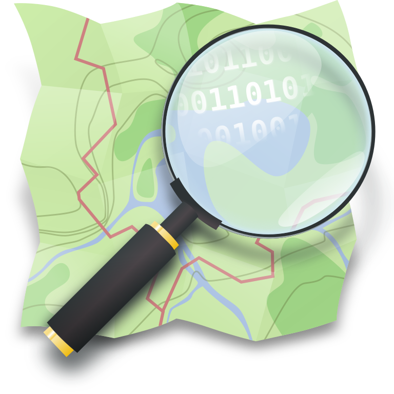

<section class="oe_container">
    <div class="oe_row oe_spaced">
        <h2 class="oe_slogan" style="color:#875A7B;">Open Street Maps alternative for map link in Event website</h2>
        <h3 class="oe_slogan">Using this module you can create a link to Open Street Maps to point at a particular place. Clicking on the link will redirect you to the official Open Street Maps website to further help users find their way.</h3>
        <div class="oe_demo oe_picture oe_screenshot">
            
        </div>
    </div>
</section>